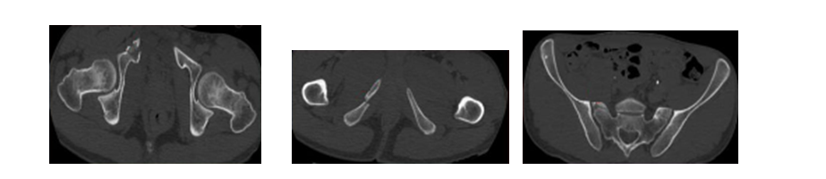
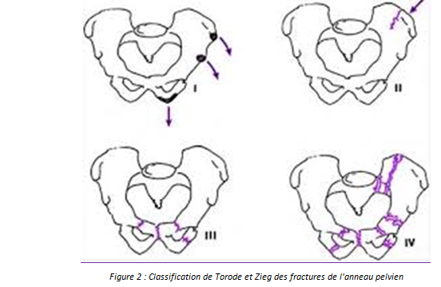
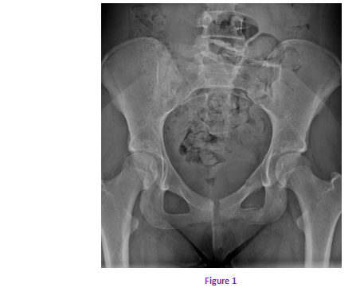

Cas clinique 2
Patiente de 15 ans, victime d’un accident de la voie publique : la patiente avait été heurtée par une voiture avec point d’impact cranio-facial, abdominal et pelvien.
1. Quelle est votre conduite à tenir en urgence ?R1
2. Interprétez la radiographie du bassin. Quel est votre diagnostic? Figure 1 R2 C2
3.Quel autre examen paraclinique demandez vous ? R3
4. Quelles sont les complications qu’il faudra rechercher systématiquement? R4 C4 AP ++
Réponse :
Tout d’abord, il faut reconnaître et traiter les 3 urgences vitales :
|
Cardio circulatoire |
ÉTAT DE CHOC dû à une lésion hémorragique interne ou extériorisée. DIAGNOSTIC POSITIF : o pâleur des téguments, marbrures des genoux, o pouls rapide et filant, temps de recoloration cutanée allongé, tension artérielle abaissée avec pincement de la différentielle. CONDUITE À TENIR : o oxygénothérapie au masque voire intubation trachéale et ventilation, o mise en place de deux voies d’abord veineux périphériques de gros calibre, o restauration de la volémie par remplissage vasculaire, o massage cardiaque en cas d’arrêt cardio-circulatoire. |
|
Respiratoire |
DIAGNOSTIC POSITIF : o Agitation, polypnée ou bradypnée, signes de lutte ou d’encombrement, cyanose. CONDUITE À TENIR : o Libération des voies aériennes supérieures (extraction d’un corps étranger, prévention de la chute en arrière de la langue par sub-luxation de la mandibule). o Intubation trachéale et ventilation, rachis cervical en rectitude. |
|
Neurologique |
État de conscience (score de Glasgow), réflexe photo- moteur, motilité spontanée. |
Réponse :
Fractures ilio-pubienne et ischio-pubienne gauche et du sacrum gauche.
Réponse :
On demande un scanner du bassin (figure2, 3 et 4)

Réponse :
Il faudra rechercher les complications vasculaires, neurologiques et urologiquesCommentaire :
 |
Classification de Torode et Zieg : (Figure1)
-Type I : Arrachement apophysaire.
-Type II : Fracture de l’aile iliaque.
*II A : Arrachement apophysaire iliaque.
*II B : Fracture vraie de l’aile iliaque.
-Type III : Fracture simple et stable de l’anneau pelvien.
*III A : Disjonction symphysaire ou arrachement apophysaire de la symphyse.
*III B : Fracture du cotyle sans lésion concomitante de l’anneau pelvien.
-Type IV : Fracture génératrice d’instabilité.
*IV A : Fracture bilatérale des branches ischio et ilio-pubiennes.
*IV B : Fracture du pubis ou disjonction symphysaire associée à une lésion instable de l’arc postérieur (disjonction sacro-iliaque ou fracture de l’aileron sacré).
Commentaire :
- -Complications vasculaires : coloration et température cutanée, pouls périphériques, écho Doppler en cas de doute.
- -Complications neurologiques : recherche de lésions du plexus lombo-sacré, la sensibilité et la tonicité du sphincter anal.
- -Complications urologiques : incapacité mictionnelle, globe vésical, hématurie ou urétrorragie.
COMPLICATIONS :
- -Hémorragie rétro-péritonéale : 46% des fractures du bassin développent un hématome rétropéritonéal significatif mais moins de 10 % se compliquent de choc hypovolémique sévère.
- -Complications neurologiques par lésions du plexus lombo-sacré.
- -Lésions urinaires : elles sont dominées par les lésions de l’urètre et les lésions vésicales, une urétrorragie ou une hématurie font suspecter le diagnostic.
- -Lésions génitales et rectales.
- -Lésions associées : traumatisme crânien, thoracique, abdominal, autres fractures …
SÉQUELLES :
- -Cal vicieux
- -Dysplasie de hanche
- -Diastasis de la symphyse pubienne
- -Douleurs résiduelles
- -Séquelles des lésions neurologiques, urinaires et génitales.
Figure 1

Références
- PETRISOR B.A, BHANDARI M.
Injuries to the pelvic ring: Incidence, classification, associated injuries and mortality rates.
Current Orthopaedics, Elsevier 2005;19:327–333.
- TILE M.
Fractures of the Pelvis and Acetabulum.
Seconde édition.1995. Baltimore: William ET Wikins
- PAPAREL P, CAILLOT J.L, VOIGLIO E.J, FESSY M.H.
Fractures du bassin
Encyclopédie medico-chirurgicale 2007 ; 25-200-G-10
- GEERAERTS T, CHHOR V, CHEISSON G, MARTIN L, BESSOUD B,
Initial management of blunt pelvic trauma patients with haemodynamic instability
Critical Care 2007;11:204.
- VRAHAS M
Classification and biomechanics of pelvic ring injuries
Operative Techniques in Orthopaedics 1997;7(3):162-166.
- CRYER HM, MILLER FB, EVERS BM, ROUBEN LR, SELLIGSON DL.
Pelvic fracture classification: correlation with hemorrhage.
J Trauma 1988;28:973-80.
- NORDIN J.Y. ET AL.
Fractures du bassin.
SOFCOT ,RCO 1997;83(suppl III) :55-108.